MONO2K on the Ableton Move: the FM-1's Monomachine-style groovebox, on eight tracks, every page one pad away.
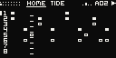
HOME: eight lanes, each playhead its own.
The same firmware core as the FM-1's: the same machines, sequencer, PERFORM and bus, sample for sample. It runs on Schwung as an overtake module: while it is open, MONO2K owns the pads, the steps, the knobs and the screen; Move's own sets keep playing beside it.
Make a track, page by page
Each page is one job, in the order you make music.
The install page says how it installs. It runs on Schwung, which is unofficial: not made, approved or supported by Ableton. Back up your sets before installing Schwung or anything on it.
MONO2K never touches Move's sets. Its own patterns are kept in one file, apart from Move's (Saving).
Note
MONO2K is not affiliated with Ableton, M-VAVE or Elektron. Move is Ableton's; Monomachine is Elektron's. Its machines are written from scratch and measured against a Monomachine's output.
Getting in and out
Schwung's Tools menu opens it; Back parks it; Shift + Back closes it.
Do
Press
Open
Shift + touch the volume knob + step 13: Schwung's Tools. Then Overtake Modules, MONO2K.
Park
Back. Move is back; MONO2K plays on behind it, in time.
Return
Tools again (Shift + volume touch + step 13, twice), or Shift + a long press on step 13: the last parked tool comes back.
Close
Shift + Back. MONO2K saves and stops.
Escape
Shift + volume touch + jog click: back to Move, always.
Before installing a new MONO2K, close the open one with Shift + Back: a parked MONO2K keeps the old one loaded.
Find your way
The top two rows are the pages, the bottom two the keyboard, the steps the sequencer.
A pad opens its page. The top row is the track's sound, the second the pattern, the mix and the two functions.
Knobs 1–8 turn the page. A touch shows the knob's full name and its value large.
The track buttons pick the track (Shift + a button for 5–8); every page shows the track in view.
The steps are the sequencer on every page. Hold one and turn a knob: a lock.
The pads as MONO2K lights them: HOME in view; keys held on TRK; PADS; PERFORM on.
Row
Pads
Top
The sound of the track in view: SYN AMP FILT EFX DSTR LFO1 LFO2 LFO3. Orange.
Second
HOME TRK PAT GRID MIX GLO in azure; SOUNDS and PERFORM, the two functions, in magenta.
Third
The black keys: C# D# · F# G# A# · ·
Bottom
The white keys: C D E F G A B C
Steps
The sequencer, on every page.
The page in view is lit bright, the others dim. On the keys the root is lit orange and the notes played white, by hand or by the sequencer; a pad no key has stays dark. With PERFORM on, the keys are its effects (Play it live). Every control: Every control.
Play the demos
Bank A holds the FM-1's four finished parts. Hear what MONO2K does, then take one apart.
Press Play: Move and MONO2K start together.
Turn the jog: the patterns' list. A click queues the one under the cursor for the bar's end.
Hold Mute and press steps 1–8: tracks mute and come back.
Press the PERFORM pad, then hold a key: the whole mix repeats, stutters or stops.
Back parks MONO2K: it plays on behind Move, in time.
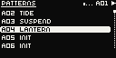
The jog turned: the patterns.
Bank A
The FM-1's four demos, A05–A16 blank. Patterns from the FM-1 have six tracks: on the Move, tracks 7 and 8 start empty.
Build a beat
The 16 steps are the sequencer on every page: tap them in, or play them in.
In bank A, Shift + step 5: A05, an empty pattern.
Press a track button for a drum's track (Shift + a button for 5–8).
Tap steps 1, 5, 9 and 13. A quick tap on a trig takes it away.
Press Play. Another drum's track: 5 and 13. Another: every other step.
Shift + Rec saves.
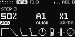
A step held: its condition, note and ratchet, each over what turns it.
The steps
A step
Places a trig; a quick tap on a trig takes it away.
Hold + jog
The step's note.
Held a moment
The screen shows the step: its condition, note and ratchet, each over what changes it: JOG under what the jog sets, CLICK under the other. Hold several and they change together; the first is the one shown.
Rec
Live record: the keys, and knobs as locks on the step playing. A key hit hard (velocity over 110) records an accent.
Left / Right
The bars of a pattern longer than 16 steps; both together, follow the playhead again.
Play it in: PADS
Press Sample: the bottom row plays the eight tracks, each at its own note (its trigs' most common), and the row above mutes them (at the bar when GLO says so; a mute waiting blinks). Sample again: the piano. REC records each hit into its own track. A small mark in the header while PADS is on.
Capture
MONO2K always listens to what you play on the keys, REC or not. Press Capture and the last whole bars you played go into the steps: while playing, each note on the bar and step it fell on; stopped, your first note becomes bar 1. It adds to what is there, never more than the track's length; in PADS every track gets its own hits. One Undo takes it all back.
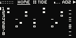
PADS on: its mark in the header.
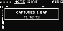
Capture: the bars taken, and where.
Play chords: POLY
Any sound as a polysynth: the track lends its sound to the tracks after it, each one a voice.
Pick the chords' track, say T1. TRK pad, knob 3: MODE to POLY.
Knob 4, VOIC: how many voices, up to eight. T1 on four plays T1 to T4.
Hold a chord on the keys: each note a voice; past VOIC the oldest gives its voice up. Loop: the chord holds until the next.
Rec while playing, or Capture: the chords go into the steps.
MODE back to OFF: T2 to T4 are themselves again.
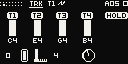
TRK on POLY: the voices, their notes, HOLD.
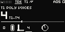
VOIC: four voices, T1 to T4.
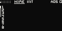
HOME: T2–T4 bracketed to T1.
A voice is a track: T1's machine, every knob, its locks, LFOs and effects. Their own sounds wait, unheard; MODE off gives them back. A voice's track button shows T1; its mute mutes T1.
Recorded: the lowest note on T1's step, the next on T2's, and on; past VOIC dropped. MODE off leaves them in T2's to T4's steps, played with their own sounds.
T1's step is the chord's: its condition, chance, trig type, accent, ratchets and locks. A note on T2 where T1 has none plays on its own step, in T1's sound.
MIDI on T1's channel plays chords. T8, the last, has no track after it: POLY passes it by. The FM-1 has the same (its manual).
A slip
Undo; Shift + Undo, redo. Delete held + a track button: its steps cleared.
Shape a sound
Eight tracks, each one mono machine with its own sound, chain and steps.
Pick the track with its button. Shift + jog: its machine.
SYN pad: the machine's eight knobs, and its mark, swaying in time and hopping on the track's hits. AMP: the note's shape, an ADSR (the pad again: HOLD). FILT: the filters and their ADSR (again: how far it moves them).
Gone too far? Delete + a knob: back to its INIT.
SOUNDS pad: the library on the jog, each sound heard on the track; a click keeps it.
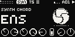
SYN: the machine's kind, name and mark; A–H as pictures.
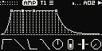
AMP: the envelope, live.
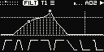
FILT: the response, live; the envelope's reach dotted.
The machines, their INIT sounds, the chain after each (amp, filters, EQ, distortion, delay, the bits, fold and XOR) and the three LFOs are the FM-1's: its manual has them in full. An FX machine works on the track before it, as on the FM-1.
SOUNDS
The library's 96 sounds, a pad away: the FM-1's catalogue.
SOUNDS pad
Opens the catalogue on the track in view.
Jog, or knob 1
Each sound landed on is put on the track and heard.
Knob 2
A category.
Jog click, or Up
Keeps it (undoable).
The pad again, Menu or Down
The track's own sound back, as it was.
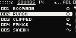
The library, the one heard lit.
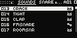
Knob 2: a category.
Add effects
On each track, on the bus where the tracks meet, and under your hands.
EFX pad: the track's EQ, rate reduction and its own delay.
DSTR pad: BITS, FOLD and XOR; VERB sends the track to the bus's reverb; then the modulation.
GLO pad: the bus: DCAY the reverb's length, DAMP how dark it falls, ADPC a 4-bit crunch, DRIV the drive.
PERFORM pad: the keys play effects on the whole mix (Play it live).
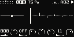
EFX: the EQ's band; the echoes, ping-pong.
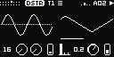
DSTR: a sine through the crush; the modulation.
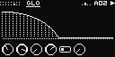
GLO: the bus, the reverb's tail.
What each does, and the FX machines: the FM-1's Add effects.
Add movement
A sound that changes as it plays: a knob locked to one step, an LFO.
Hold a step and turn a knob: that value plays on that step alone, a lock.
Delete + a knob, the step held: that lock away.
Rec while playing: knobs turned are written as locks on the step playing.
LFO1 pad: DEST what it moves, DPTH how far, SPD how fast. LFO2 and LFO3 likewise.
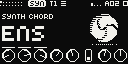
A step held: its locks marked over their knobs.
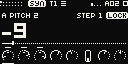
A locked knob touched: STEP 1, LOCK.
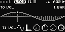
LFO2: its wave as deep as it swings.
Locks, the LFOs and trig types in full: the FM-1's Add movement.
Make it vary
Steps that play by chance, repeat or last longer; tracks of their own length and chance; Grids.
Hold a step, click the jog and turn it: its condition, a chance of 100 to 10 %, then A:B, 1ST, PRE and FILL.
Hold a step and press Up or Down: its ratchet.
Hold a step a moment and tap a later empty step: the note lasts to it, up to 8 steps.
PAT pad: knob 5 the track's own length (TLEN), knob 7 its chance (PROB).
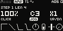
A later step tapped: the note's length, LEN 4.
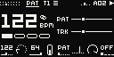
PAT: the tempo, the bar, the lengths.
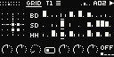
GRID: Grids' map and its three lanes.
Hold + jog click, then jog
Its condition: a chance of 100 90 75 60 50 40 33 25 12 or 10 %, then A:B, 1ST, PRE and FILL. The jog stays on it for the next step you hold; click again for the note. The screen tags what the jog sets.
Hold + Shift + jog
Its condition too. Hold the step first: Shift first picks a pattern.
Hold + Up / Down
Its ratchet.
Held a moment + a later empty step
The note lasts to that step, up to 8 steps: LEN on the screen, the steps it lasts over dim. A nearer step shortens it; the same last step again gives the sound's own length back. The next trig on the track still cuts it.
A step's condition is its own. PROB (knob 7 on HOME and PAT) is the whole track's chance, on top of it: at 50 % there, a step at 50 % plays one time in four. The GRID pad is Grids, Mutable Instruments' drum map, on any track.
The conditions, ratchets, trig types, Grids' lanes and each track's own length, speed and chance in full: the FM-1's Make it vary.
Patterns into a song
Four banks of 16, each pattern a part with its own sounds. Chain them as you play.
Hold Copy, press Shift + the open pattern's step, then Shift + an empty one: the pattern copied there.
Open it (Shift + its step) and change it: the next part.
Playing, Shift + a step: the next part starts at the bar's end; again before it, at once.
Hold Mute and press steps 1–8: tracks in and out.
Shift + a step
The bank's 16 patterns: at the bar's end while playing; again before it, at once.
Shift + Left / Right
The bank, A–D.
Jog
The patterns' list, open at the one playing; a click loads the one under the cursor (at the bar's end while playing, a second click at once). Left alone 3 s, it closes.
Left / Right
The bars of a pattern longer than 16 steps.
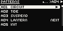
A04 queued for the bar's end: NEXT.
Copy and delete
Copy held
A step, then other steps: pasted there. A track button, then another: its steps and sound. Shift + a step (a pattern), then another: the pattern. Steps held when Copy is pressed are the source.
Delete held
A step: its trig away. A track button: its steps cleared. Shift + a step: that pattern's steps cleared. A knob: the held step's lock away, else the value back to its INIT. Steps held when Delete is pressed: their locks cleared.
Play it live
PERFORM turns the keys into the bus's effects: colours that stack over moves that take turns.
Press the PERFORM pad: the keys are effects now.
Hold colours on the top row: they stack. Moves on the bottom row take turns.
Up: more moves. Down: back.
The pad again: the keyboard back.
Row
Keys, left to right
Top: colours
LPF · DUB · HPF · GATE · CRUSH · DRIVE · WOW · SHIMMER. Held with anything; they stack.
Bottom: moves
RPT 1/4 · RPT 1/8 · RPT 1/16 · RPT 1/32 · ROLL · STUTTER · REVERSE · STOP. One at a time: the next takes over.
Up: moves 2
FREEZE · SCATTER · OCT DN · OCT UP · SPIN · KILL. Down: back. The colours stay.
Each column is a pair that plays together. PERFORM stays on across pages. Its page's knobs are the bus's four: DCAY, DAMP, ADPC, DRIV.
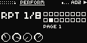
RPT 1/8 held: named, its key lit.
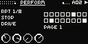
Three at once.
Mutes and the arp
Mute tapped: the track in view. Held: steps 1–8 and the track buttons mute and unmute tracks; at the bar when GLO says so.
Loop: the track's arp HOLD (TRK: its mode, speed, range and gate); on POLY, its chord's.
In time with Move
One Play starts both, at Move's tempo.
SYNC: Move's tempo
Play goes to Move, and Move starts and stops MONO2K, locked to its bar. Following goes on while MONO2K is parked; if Move is already playing when MONO2K opens, MONO2K joins at Move's next start.
The tempo from MONO2K
Shift + knob 1 on any page (PAT's knob 1 and HOME's knob 3 too) shows the tempo large: a tenth of a BPM turned slowly, whole BPM turned fast. MONO2K moves at once and asks Move to follow; when Move reaches it, MONO2K locks to Move's bar again, without a jump. Delete + the tempo knob: Move's tempo again.
INT: MONO2K alone
If Move doesn't follow within 2.5 s, MONO2K plays on alone at its own tempo: INT in the header, and a moment's MOVE: LINK OFF. With no clock from Move at all, Play still starts MONO2K on its own. A change of Move's tempo, or Delete + the knob, brings SYNC back.
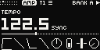
Shift + knob 1: the tempo, SYNC.
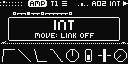
Move didn't follow: INT.
To let MONO2K set Move's tempo
Turn Link on in Move's settings.
In Schwung's Global Settings, Audio, turn Move->Schwung on.
Keep Move alone in its Link session: with Live or another peer on the network, the tempo isn't passed on.
Its cost
Move->Schwung rebuilds Move's own tracks from Link Audio streams: they sound some 16–29 ms later than MONO2K, Move's metronome and speaker EQ are replaced, and a busy Move can drop out. Without it, MONO2K follows Move's tempo and sets its own under INT.
Saving
Shift + Rec saves; closing saves too.
Shift + Rec
Saves: the open pattern's reload point first, then everything, as the FM-1's SAVE.
Shift + Back
Closes MONO2K and saves.
A setting
Saved once it stands.
Everything is in one file, /data/UserData/schwung/mono2k/mono2k.m2ks: the patterns, the kits, the settings, the projects and the sound library. It sits outside the module's folder, so an update keeps it. A file MONO2K can't read is kept as mono2k.m2ks.bad, and the factory's patterns play.
The Patch Editor is the FM-1's for now: it edits six tracks.
Every control
What each of the Move's controls does under MONO2K.
Knobs and jog
Knobs 1–8
The page's eight parameters. A touch or a turn shows the knob's full name and its value large. Two detents a value; a flick moves faster; a short list, 3.5 detents an option.
TRCK · DEST · WAVE · TRIG · MULT · SPD · PHAS · DPTH
HOME
LEVL · PTCH · BPM · SWNG · TLEN · SPD · PROB · LANE
TRK
PTCH · LEVL · MODE · SPD · RNG · GATE · BANK (DIGI-WAV's wave bank); MODE on POLY: PTCH · LEVL · MODE · VOIC · – · GATE
PAT
BPM · SWNG · LEN · ACNT · TLEN · SPD · PROB · LANE
GRID
X · Y · CHAOS · RES · BD · SD · HH · LANE
MIX
The eight tracks' levels, a knob a track
GLO
DCAY · DAMP · ADPC · DRIV · MUTE (at the bar, or at once)
PERFORM
DCAY · DAMP · ADPC · DRIV
SYN to LFO3 and TRK are the track's. TRK holds the arp and POLY (the FM-1's ARP). PAT is the pattern's time and the track's own length, speed, chance and lane (the FM-1's HOME 2). HOME is the FM-1's HOME 1 and 2 on one page. GLO is the bus. The FM-1's MIDI settings have no page here: the Move routes no MIDI to them.
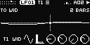
LFO1: what it moves, its wave, a cycle of 2 bars.
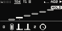
TRK: the arp's notes, HOLD on.
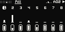
MIX: eight levels, live.
Machines
The FM-1's nineteen machines in eight families, on any of the eight tracks. Each has eight knobs, A–H: SYN's knobs 1–8.
Loading the machines from the firmware…
Credits and licence
Free software, on Schwung.
MONO2K is by Sequencist, and free software under the GNU General Public License, version 3 only. Its source and this site are on GitHub.
On the Move it runs on Schwung (MIT), an unofficial framework for Move's modules, not made, approved or supported by Ableton. Type: Elektron Pixel Font by savingaurora (FontStruct), CC BY-SA 3.0; MONO2K's adaptation is under CC BY-SA 4.0. Orbitron (the wordmark) and Inter Tight are under the SIL Open Font License. GRIDS is Émilie Gillet's Grids (Mutable Instruments), its map and rules ported from its source (GPL-3.0). The DRM- drums' voice design is after the Erica Synths LXR drum voices (GPL-3.0-only; originally Julian Schmidt's Sonic Potions LXR): their laws, not their code or samples. The digital waves are the author's own.
The machines were measured against a Monomachine: the FM-1 manual's credits say how. Ableton and Move are trademarks of Ableton; Monomachine and Machinedrum of Elektron; M-VAVE and FM-1 of their owners. MONO2K is not affiliated with Ableton, M-VAVE or Elektron. If it is useful to you, you can support it on Ko-fi.
Change log
What each update of the Move version brought, newest first. The FM-1's is in its manual.